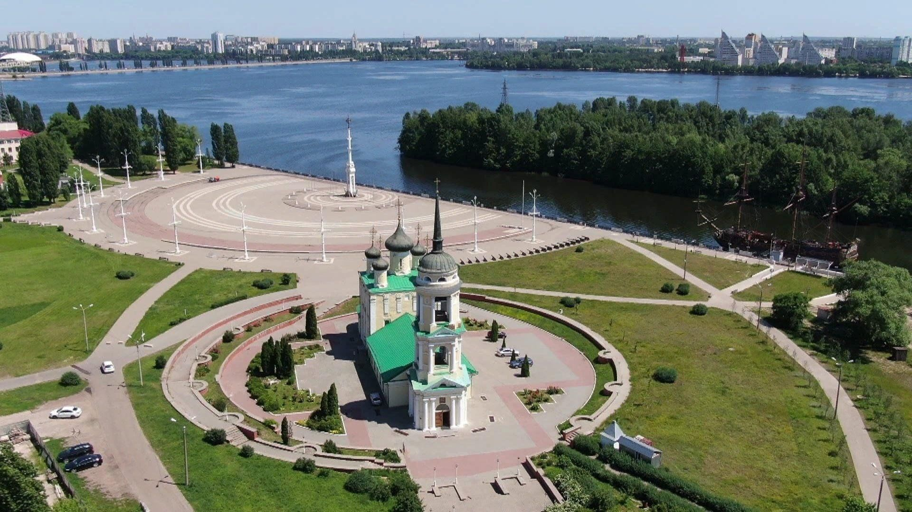
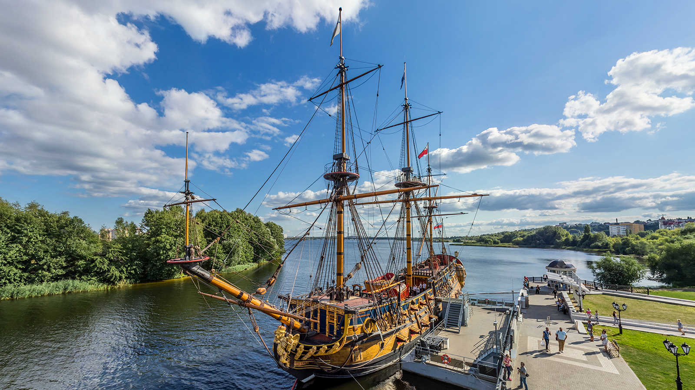
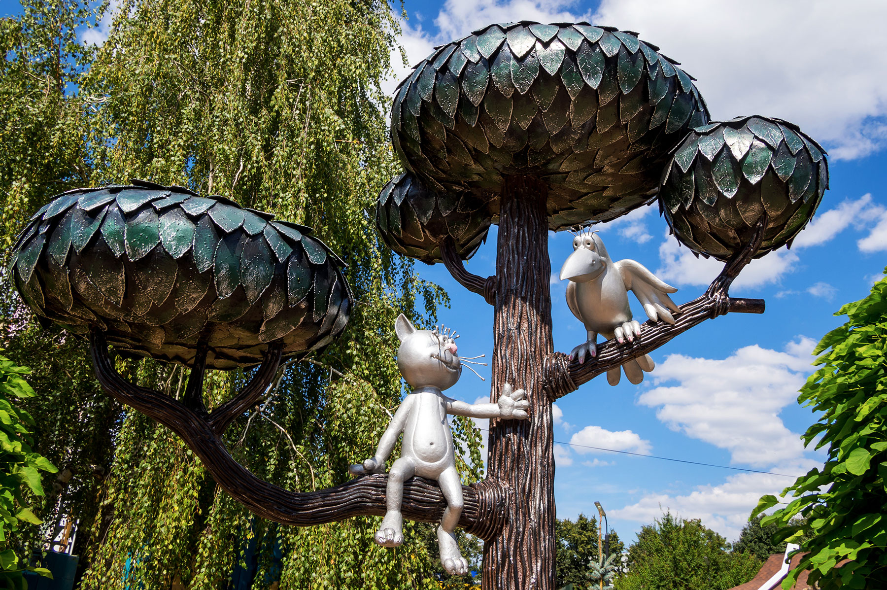
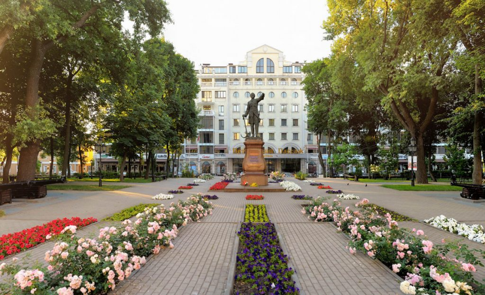

Адмиралтейская площадь
Место, где начиналась история российского флота. Здесь находится Успенский храм и корабль-музей "Гото Предестинация".

Место, где начиналась история российского флота. Здесь находится Успенский храм и корабль-музей "Гото Предестинация".

Точная копия первого российского линейного корабля, созданного по чертежам Петра I. Настоящий символ города.

Самый милый памятник города, посвященный герою известного мультфильма. Обязательное место для фото.

Уютный парк в центре города с величественным памятником Петру I, установленным еще в XIX веке.